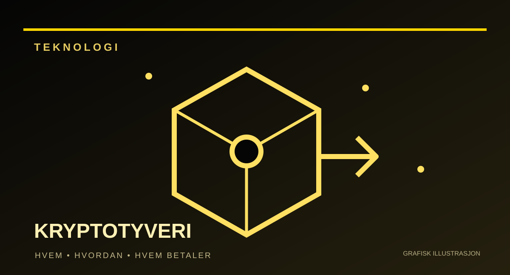

REDAKSJONELT UTKAST – IKKE PUBLISERT
KRIM / TEKNOLOGI · Utkast opprettet 2. november 2026
Hvem stjal 6,3 milliarder dollar fra Binance – og hvem betaler?
Kryptovaluta for anslagsvis 6,3 milliarder dollar ble tappet fra Binances nettilkoblede lommebøker 29. oktober. FBI peker mot nordkoreanske hackere. Men hvordan fikk de tilgang til pengene – og hvorfor sier selskapet at det, ikke kundene, skal ta regningen?

Hvem gjorde det?
Meldingen kom fra FBI 31. oktober: Amerikanske etterforskere tilskriver tyveriet fra Binance 29. oktober en nordkoreansk hackeroperasjon de omtaler som TraderTraitor. Etterforskerne sier de har fulgt bevegelser av tyvegods og sett store deler bli konvertert til kryptovalutaen ether. De forventer flere forsøk på å gjøre sporingen vanskelig gjennom desentraliserte vekslingstjenester.
Det er en tydelig tilskrivelse fra amerikanske myndigheter, ikke en rettskraftig dom. FBI har ikke offentliggjort navn på enkeltpersoner som skal ha gjennomført akkurat dette angrepet. Derimot har byrået offentliggjort kryptoadresser som de sier er kontrollert av eller nært knyttet til de ansvarlige. Det gjør det mulig for kryptoselskaper å forsøke å sperre videre flytting av identifiserte midler. Nord-Korea har tidligere avvist anklager om statlig organiserte kryptotyverier. Å skrive at «nordkoreanere er dømt for Binance-angrepet» ville derfor være feil.
Angrepet ligner etter sikkerhetsanalytikeres vurdering tidligere operasjoner mot kryptobørser. Det er særlig én likhet som bekymrer: Angriperne trenger ikke nødvendigvis å bryte kryptografien i selve blokkjeden. Det kan være nok å kompromittere systemene som administrerer og godkjenner utbetalinger.
Hvordan kom angriperne inn?
Binance har oppgitt at uautoriserte transaksjoner startet sent torsdag 29. oktober. Store beløp ble flyttet fra såkalte hot wallets: digitale lommebøker som er tilgjengelige gjennom nettilkoblede tjenester og derfor kan behandle uttak raskt.
I selskapets første tekniske forklaring sto en kompromittert bærbar PC tilhørende en DevOps-ingeniør sentralt. Gjennom denne tilgangen skal en angriper ha kunnet nå en intern tjeneste og sende uautoriserte uttak. Binance har imidlertid understreket at det ikke dreide seg om én enkel klikkhandling, og at etterforskningen har avdekket flere bruddpunkter.
Det avgjørende spørsmålet er derfor ikke bare hvilken PC som ble hacket, men hvorfor ett kompromittert ledd kunne inngå i en kjede som endte med utbetalinger i milliardklassen. Hvilke interne rettigheter var gitt? Hvilke ekstra kontroller skulle godkjenne store uttak? Hvorfor stoppet ikke systemet transaksjonene tidligere?
Foreløpig finnes det ikke en offentlig, fullstendig teknisk rekonstruksjon som besvarer alle disse spørsmålene. Binance opplyser at en mer detaljert hendelsesrapport skal komme etter etterforskningen. Selskapet har sagt at det så langt ikke har funnet bevis for at de private kryptonøklene ble lekket.
Hvem tar tapet?
Her er det lett å blande sammen tre helt forskjellige ting: stjålne verdier, fryste verdier og penger Binance setter inn for å dekke kundekontoer.
Selskapet anslår tyveriet til omkring 6,3 milliarder dollar. Binance opplyste 30. oktober at partnere hadde bidratt til å fryse rundt 3 milliarder dollar i berørte verdier på blokkjeden. Men fryste midler er ikke automatisk levert tilbake. De må håndteres juridisk og teknisk før de eventuelt kan tilbakeføres.
Samtidig har Binance satt av egne ressurser for å dekke beholdningene som ble tappet. Selskapet oppga 31. oktober at om lag 90 prosent av berørte eiendeler var erstattet i reservene. 1. november oppjusterte Binance tallet til rundt 95 prosent. De resterende rundt fem prosentene var, ifølge selskapet, mindre likvide kryptovalutaer som tar lengre tid å kjøpe inn i store mengder. Selskapets oppdatering 1. november er en påstand om reserveoppfylling, ikke en full, uavhengig revisjon av tilbakebetalinger til alle kunder.
Pengene skal komme fra tre kilder: sikkerhetsfondet SAFU, deler av børsens Futures Insurance Fund, og selskapets egne midler. Dette betyr ikke at hackerne har levert tilbake 95 prosent av det de tok. Det betyr at Binance sier det har skaffet tilsvarende eiendeler til reservene for å dekke det meste av tapet. Dette er selskapets egen opplysning og bør kontrolleres mot senere uavhengig dokumentasjon.
Hva skjer med kundene?
Børsen stanset uttak mens sikkerhetssystemene ble kontrollert. Binance har understreket at innskudd ikke var rammet av stansen. Søndag 1. november startet Binance en gradvis gjenåpning på utvalgte kryptonettverk, ifølge selskapets egen oppdatering. Tilgjengeligheten kan fortsatt variere mellom ulike valutaer og nettverk.
Binance har også varslet en ny kontroll av reserver, der kundene skal kunne undersøke om visse beholdninger er dekket minst én-til-én. Binance opplyste 1. november at reserver for ti store kryptovalutaer var dekket fullt ut og at et reserveøyeblikksbilde var tilgjengelig. Selskapet ventet at den tilhørende fullstendige kryptografiske verifikasjonen kunne bli klar 3. november. Det er en planlagt milepæl, ikke noe Paradisavisa kan skrive at allerede er ferdig 2. november. Et slikt reservebevis er nyttig, men det er ikke i seg selv en full uavhengig revisjon av selskapets gjeld, interne kontroller eller konsekvensene av tyveriet.
Da uttak ble åpnet gradvis igjen søndag 1. november, oppsto et nytt spørsmål: Ville kundene flytte pengene sine? Reuters rapporterte 2. november om rundt 4,65 milliarder dollar i uttak og 1,01 milliarder i innskudd de første ni og en halv timene etter gjenåpningen. Det gir netto uttak på rundt 3,64 milliarder dollar, eller om lag 2,1 prosent av børsens eiendeler, ifølge tall Binance selv oppga. Dette er kundebevegelser etter angrepet, ikke en del av tyveriet. Andre blokkjedeanalyse-tjenester har beregnet høyere uttakstall, som Binance bestrider. Målemetode og kilde må derfor oppgis når tallene sammenlignes.
Senere mandag 2. november oppga Reuters, med nye tall fra Binance, at netto kundeuttak hadde økt til omtrent 4,72 milliarder dollar. Det tidligere tallet på 3,64 milliarder gjaldt bare de første ni og en halv timene etter gjenåpningen. Tallene dekker forskjellige perioder og må ikke legges sammen eller forveksles med verdiene som ble stjålet.
Spørsmålet som gjenstår, er todelt: Hvor mye av det stjålne beløpet kan etterforskerne faktisk hente hjem, og hvilke svakheter i Binances systemer lot et så stort tap skje? Kundene har mest å tjene på at begge blir besvart – uavhengig av hvor raskt selskapet kan kjøpe nye kryptovalutaer.
Dette er et upublisert redaksjonelt utkast. Faktakontroll og redaksjonell godkjenning kreves før eventuell publisering.